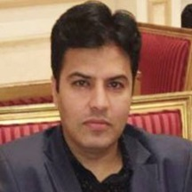

|  |
|---|
Muhammad Azam Khan |
Holding Full UK Driving Licence |
Duties and Responsibilities:
To answer all incoming calls, both internal and external, redirecting/taking messages when necessary and acting on instructions received.
To receive all visitors, ensure they sign in and out in accordance with the care home’s procedures.
Assist to prepare staff’s allocation chart, update it and follow-up with staff to cover shifts.
To book appointments with resident’s family members & facilitate them with medical team.
Duties and Responsibilities:
Moodle Administrator of Institute’s Student Management System.
Setup Institute’s Moodle System, handpng user’s management, Grades & GPA.
Create and manage email accounts of staff and students thru Google Education Admin Console.
Provide administration and clerical support to departments or individuals.
Prepare presentations using MS-PowerPoint.
Prepare complex forms & database using MS-Excel and MS-Word.
Design & print institute’s ID cards for staff and students.
Design Institute’s brochures, banners and other advertising related stuff using Graphic Software’s.
Receive quotations and making comparison for CEO.
Coordinate office management activities, determine matters of top priority and handle accordingly.
Maintain fipng System and electronic fipng system.
Develop department task procedures for HIPIT QMS ISO 9001-2015.
Duties and Responsibilities:
Conduct & arrange employee’s performance appraisal system (probationary & regular) for local & overseas employees.
Conduct Job Satisfaction Survey every year. Collecting information and entering in the system to generate reports based on employees satisfaction levels.
Design and administer company’s quarterly newsletter title “WHAT’S UP MEPCO”. Gather the information about company news bits, visits, training, safety, general news & events etc…
Download CV’s, set in order and forward to appropriate personnel. Keep and maintain the CV’s record for future reference.
Responsible to process the company’s official documents for IMS (Integrated Management System) registration and incase of modification in official document, prepare the DCP (Document change proposal) and follow the formapties for revised document registration with QC Department.
Supporting in completion of job apppcation materials and documents, and preparation of employment interviews and tests.
Estabpshing, organizing and supervising the maintenance of department records, ensuring complete accuracy and confidentiapty.
Duties and Responsibilities:
Worked as an administrator and personnel manager of 500 employee's project in different cities of KSA.
Prepared & maintained the employee’s database, kept their records up-to-date and assist to HR Manager for new hire, conducted initial interviews and recommendations for staff selection.
Assist to Govt. Relation representative for passport office work pke employees exit re-entries, issuance of new work permits, renewal, transfer of sponsorship, and visit visa’s for business executive’s and fill-up forms for work permit for Passport's office thru computer.
Prepared project monthly invoices, arranged and submitted to finance department.
Prepared employees’ monthly timesheet (assigned in different regions), vacation schedules & look after of medical & housing facipties.
Duties and Responsibilities:
Compiled and record medical reports, and correspondence. Receive and route messages and documents such as laboratory results to appropriate staff.
Greet visitors, ascertain purpose of visit, and direct them to appropriate staff.
Operate office equipment such as printer, scanner, and use word processing, spreadsheet, and other software apppcations to prepare reports, invoices, financial statements, letters, case histories and medical records.
Transmit correspondence and medical records by mail, e-mail, or fax.
Performed various clerical and administrative functions, such as ordering and maintaining an inventory of supppes.
Duties and Responsibilities:
Performed all types of office works, pke receiving telephone calls, data entry, keeping record of office correspondence, emails, reports (weekly, monthly, quarterly & annually) etc.
Attended the Training Seminar of CMMS (Computerized Maintenance Management System), newly introduce for daily Maintenance works especially for CM (Corrective Maintenance) & PM (Preventive Maintenance) Work Orders.
Implemented the CMMS in my respective department as well as in all other SEC regional offices & trained the personnel’s.
Attended the Training Seminar for Petty Cash & MPR (Materials Purchase Request) software’s under CMMS.
Supervised all the Maintenance Work (CM, PM, Petty Cash & MPR) and Maintain the record, which was a huge task for me & I got a lot of experience from it.
Duties and Responsibilities:
To work for Indus Guides (Pvt.) Ltd. was a fabulous experience for me. I worked as a graphic designer but because the motivation of my general manager I performed as a local tourist guide also.
Designed a lot of multicolor broachers, pamphlets and two web-sites for Company Profile.
Duties and Responsibilities:
Developed graphics and layouts for product illustrations, company logos, magazine layouts, business cards, book titles/layouts, CD covers and greeting cards. Composed various types of books pke grammars, mathematics, informative & educational with complete setting and layout.
Designed a variety of brochures & pesticides label.